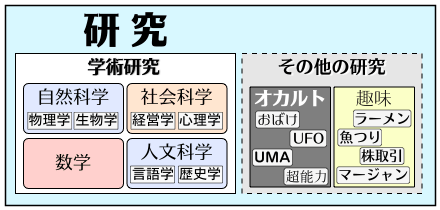
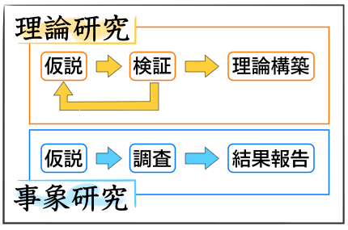
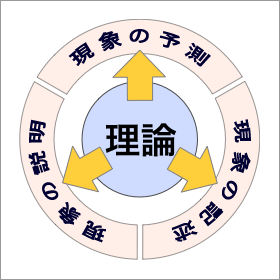

研究とは？
〈研究〉とは、あらゆる現象の真理や原理を明らかにするために行なわれる知的な行為のことである。〈研究〉というときには、人間が認識可能なあらゆる事柄が〈研究〉の対象となる。

ただし、「自然科学（科学）」や「人文科学（人文学）」など、広く認められた分野で行なわれるもの（＝学術研究）だけを〈研究〉と呼ぶこともある（狭義の〈研究〉）。
これに対して、個人的な趣味や「疑似科学」（オカルトなど）で行なわれるものも〈研究〉に含まれるとする考えもある（広義の〈研究〉）。
学術研究の特徴
学術研究の特徴は、それが公共性を持つということである。これは、以下のことを意味している。
- 学術研究の成果は、公開されて共有されなければならない（共有性）
- 学術研究には、不正な手段や反社会的な方法は許されない（倫理性）
研究の具体的な意味
〈研究〉をより具体的に定義すれば、未知の内容を含む特定の問題に具体的な解決を与えるために行なわれる学術的な活動であるということができる。
〈研究〉の対象となる『問題』は、解決されていない問題でなければならない（「１たす１はいくつか？」など未知の内容を含まない問題を考えても〈研究〉にはならない）。
そのため、〈研究〉とは、「新しい事実や理論を発見・発明すること」だということもできる。ただし、ここでいう「新しい」とは、『先行研究に同じものがない』という意味である。画期的である（読み手が目を丸くする）とか、衝撃的である（読み手がひっくり返る）とかという意味ではない。
理論研究と事象研究
研究は、方法によって大きく理論研究と事象研究にわけられる。
- 理論研究
- 理論の構築やモデル化を目指す研究（包括的）
- 事象研究
- 個別のことがらの説明を目指す研究（個別的）
一般に、理論研究では《仮説→検証→理論構築》という流れで行なわれ、事象研究は《仮説→調査→結果報告》という流れで行なわれる。

いずれの場合も、アイディアを科学的な手法で修正していくという点は共通している。
理論研究と実証
理論研究は、〈理論〉の構築を目指した研究である。一般に、〈理論〉は〈実証〉と対になる概念だが、理論研究に実証が欠けているということではない。
理論研究であれ、事象研究であれ、何らかの〈実証〉（仮説の検証や仮説に関わる調査）を必要としているのである。
実証の方法には、シミュレーション、コンピュータ解析、論理計算、整合的な体系化、調査・統計、実験・観察などがある。
理論とは？
理論とは、現象を包括的に理解・解釈するために構築される論理的で体系的な知識のことである。
なお、ここで、現象を理解・解釈するというのは、現象を説明すると同時に現象を予測することができるという意味である。したがって、理論とは以下の３つの機能を併せ持つものであるといえる（重要なことは、現象を説明するだけでは理論ではないということである。たとえば、「楊さんが２級に合格した」という事実に対して「頑張ったからだ」というのは〈説明〉としては成り立っても〈理論〉とはいえない）。
- 現象の記述を可能にする
注）理論を前提にして現象の見方が決まる：たとえば、天気について「風向きと天候には△△という関係がある」という理論を前提にして、「竹南の天気は西の風で晴である」という概括的な天気の記述が可能になっている
- 現象の説明を可能にする
- 現象の予測を可能にする

理論が予測性を持つことは、たとえば、理論による予測と実際の事例を比較することで理論の正当性を検証できる可能性を示している。
ただし、理論は、あらゆる現象を精密に記述・説明・予測できるものであるとは限らない点にも注意が必要である。多くの場合、理論とは非常に限定された条件において有効になるもの（＝厳密な理論）であり、他方、条件による制約の少ない理論（＝一般理論）は本質的に個別・具体的なものを対象にはしていないからである。なお、おおまかにいうと、数学や物理学の〈理論〉は、厳密な理論であり、哲学の〈理論〉は一般理論である。また、心理学や社会科学の〈理論〉は、統計学的（確率論的）に与えられたもので、両者の中間に位置するものだと考えればよいだろう。
基礎研究と応用研究
研究は、その目的から大きく「基礎研究」「応用研究」「開発研究」の３つに分けられる（ただし、文科系の分野には「開発研究」はない）。
- 基礎研究
-
- 仮説や理論を作り出すために実用性を考慮せずに行われる研究
- 現象や事実を説明するために実用性を考慮せずに行われる研究
- 応用研究
-
- 基礎研究の成果・知見を利用し、実用化を目標に行われる研究
- すでにある応用研究を利用し、新しい実用化の方法を探る研究
- 開発研究
-
- 材料や製品の開発・改良を目標として行われる研究（製品開発）
- システムや工程の開発・改良を目標に行われる研究（技術開発）
応用研究は基礎研究を基盤とするが、基礎研究も応用研究からアイディアなどを得ることがある。また、基礎研究であっても、応用研究への貢献を考慮に入れて行なわれる場合もある。実際には、基礎研究と応用研究は相補的あるいは連続的なものである。
定義について
学術研究が公共性を持つことは、すでに述べたとおりである。そのため、学術研究では、しばしば研究の対象を定義する必要が生じる。研究の対象が明確に定義されていなければ、研究（の成果）を第三者と共有することができないからである。
定義の方法
定義には、以下のようなさまざまな方法がある。
- 記述的定義：
言語や記号を用いて対象を限定し、他のものと区別する方法
- 形式的定義：
共通の事柄を列挙することで規定する
- 内包的定義：
要件や条件を列挙することで規定する
- 例）動物とは、自由に行動し、光合成をせず、エサを食べる生き物である。
- 外延的定義：
該当や適用を列挙することで規定する
- 例）動物とは、犬、猫、馬、牛、豚、鹿などのことである。
- 概念的定義：
主要な特性や性質に基づいて規定する
- 例）包丁とは、食材を切るための道具である。
- 規約的定義：
特定の事物を（新しい）語で命名する
- 例）文化大学の卒業生を文化人と呼ぶ（ことにする）。
- 手続的定義：
発生のプロセス、実験や観察における手続きに置き換える方法
- 発生的定義：
それが発生する過程によって規定する
- 例）トマトジュースとは、トマトから皮と種をとり除いて潰し、食塩を加えたものである。
- 操作的定義：
具体的な手続きに置き換えて規定する
- 例）日本語能力とは、日本語能力試験での得点のことである。
研究に使えない定義
詩的な定義、曖昧な定義、無意味な定義、大雑把な定義などは、学術研究に用いることができない。
- 詩的な定義（譬えや特殊な表現を含む定義）
- ×悪い例）教育とは、情熱が作りだす芸術である。［「教育」を「芸術」に譬えている］
- 曖昧な定義（説明が不十分な概念を含む定義）
- ×悪い例）言語とは、人間的思考の形式的な表現である。［「人間的思考」とは何??］
- 無意味な定義（語を『の』で区切った定義・同じ意味の語による言い換え）
- ×悪い例）日本語能力とは、日本語の能力である。
- ×悪い例）ワインとは、葡萄酒のことである。
- 大雑把な定義（対象が十分に特定できない定義）
- ×悪い例）動物とは、生き物の一種のことである。
- ×悪い例）包丁とは、金属でできた道具である。［金属でできた道具は包丁だけではない］